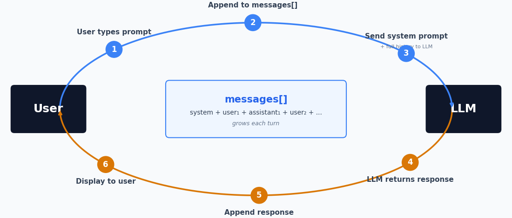
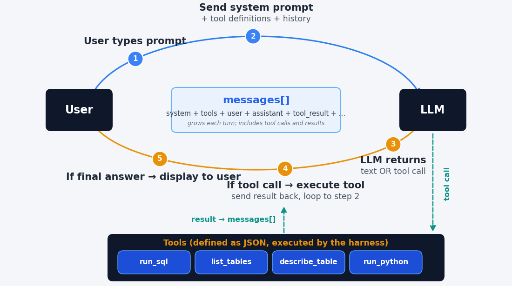

Thursday, September 24, Morning
Position
J. Howard Creekmore Professor of Finance and Professor of Economics
At Rice since 2009. Before that, Northwestern, Indiana, Washington University in St. Louis, and Texas A&M
Teaching
| When | Topics | |
|---|---|---|
| 1 | Thursday morning | How LLMs work · models · computer use · how agents work · doing work with AI · prompting |
| 2 | Thursday afternoon | AGENTS.md, SKILL.md · connectors and plugins · harnesses |
| 3 | Friday morning | Working with data |
| 4 | Saturday morning | Creating docs · creating apps |
| 5 | Saturday afternoon | Retrieval augmented generation · open source models |
| 6 | Sunday morning | Creating agents · managing security risks |
Every session has hands-on blocks in your own container. Bring a laptop and stay on wifi for four days.
| Topic | What it covers | |
|---|---|---|
| 1 | How language models work | Tokens, vectors, training, and why they fail |
| 2 | Models and performance | Who makes them, what they cost, how they compare |
| 3 | Computer use | Models that click and type, in a browser or on the desktop |
| 4 | How agents work | Chatbots, tools, and what is written into the harness |
| 5 | Doing work with AI | Where to work, and what is in your lab container |
| 6 | Prompting tips | Planning, code for numbers, checking what comes back |
| When | What |
|---|---|
| 2017 | Google researchers publish the transformer (“Attention Is All You Need”) |
| 2020 | GPT-3 (OpenAI) shows abilities that appear with scale |
| 2022–2023 | Online chatbots. You typed, it typed back |
| 2023–2024 | Code execution and web search arrive |
| 2025 | The serious versions move to the command line, reading and writing files on your own machine. DeepSeek R1 appears |
| 2025–2026 | That command-line capability is wrapped back into an app |
| 2026 | Agents that carry out extended work on your files without you living in a terminal |
October 2025
“They just don’t work. They don’t have enough intelligence, they’re not multimodal enough, they can’t do computer use and all this stuff. They don’t have continual learning. You can’t just tell them something and they’ll remember it.”
“I feel like the industry is making too big of a jump and is trying to pretend like this is amazing, and it’s not. It’s slop.”
December 2025
“I really am mostly programming in English now, a bit sheepishly telling the LLM what code to write… in words. Biggest change to my basic coding workflow in ~2 decades.”
February 2026
“It is hard to communicate how much programming has changed due to AI in the last 2 months: not gradually and over time in the ‘progress as usual’ way, but specifically this last December. Coding agents basically didn’t work before December.”
“I don’t think I’ve typed like a line of code probably since December.”
Enough of the mechanism to explain what these models are good at and where they fail. Every failure you meet over the four days has a cause in this block.
Text is cut into pieces from a fixed vocabulary before the model sees any of it.
"The cat sat on the mat" -> ["The", " cat", " sat", " on", " the", " mat"]
"Unbelievable" -> ["Un", "believ", "able"]Common words stay whole; rare and long words break into pieces. A typical vocabulary runs to about 100,000 tokens.
Numbers break on the same rules, which have nothing to do with arithmetic. 13,963,378.65 reaches the model as a handful of unrelated pieces.
Given the tokens so far, predict the token that comes next. That is the entire operation.
Everything a model appears to do — answering, summarizing, writing code, refusing — is that one prediction, repeated.
The input can currently run to about a million tokens, roughly two-thirds of the Harry Potter saga.
The model does not work with tokens. It works with numbers.
Each token is a list
“king” becomes 4,096 numbers. “queen” becomes 4,096 numbers that are close to them.
Tokens used in similar contexts end up near each other.
The space is mostly empty
There are far more possible vectors than there are tokens, so most points in the space name nothing.
The prediction can land between tokens.
The idea
\(y = 4x\) is a function. The 4 is a parameter.
Change it to 3 and you have the same structure with different behavior.
The scale
Same idea with hundreds of billions of parameters, arranged as a transformer — the architecture published by Google researchers in 2017.
What is learned
The vector for every token, and every parameter in the network.
Both are adjusted together to reduce prediction error on the training text.
What it takes
Trillions of words. Thousands of GPUs for weeks or months. Tens to hundreds of millions of dollars for one run.
Nothing is looked up or stored as fact. The arrangement captures how words are used, which is why it recalls common things reliably and rare things unreliably.
The network does not output one token. It outputs a probability for every token in the vocabulary. Temperature controls how that distribution is sampled.
| Setting | Behavior |
|---|---|
| Near 0 | The highest-probability token every time. Repeatable. |
| Near 1 | Sampled from the distribution. Different each run. |
| Higher | Low-probability tokens get picked. Text degrades. |
A model trained only to predict the next token continues your text. It does not answer a question.
<|user|> your question <|assistant|>.<|assistant|> is a useful reply.The mechanism did not change. What changed is which continuation is the likely one.
The same trick applied again: train the model to write out its working before it answers.
How it was trained
Reinforcement learning on problems whose answers can be checked — mathematics, code, puzzles — rewarding the chains of tokens that arrived at a correct answer.
Why it helps
The model holds no state between tokens. The intermediate tokens are the only place a partial result can live, so writing them out is the computation.
The thinking you see may be a summary of a much longer chain, and you are charged for the whole chain as output tokens.
| Tab | What it shows | Model |
|---|---|---|
| Tokens | How text is cut into tokens | Qwen3-1.7B-Base, o200k_base |
| Token embeddings | Each token’s vector, and its nearest tokens | Qwen3-1.7B-Base |
| Next token | Next-token probabilities, and temperature | Qwen3-1.7B-Base |
| Base vs chat | One prompt, to a base model and a chat model | Qwen3-1.7B-Base, Qwen3-1.7B |
Everything runs on my laptop. o200k_base is OpenAI’s tokenizer; the rest are open-weight models from Hugging Face.
Who makes the frontier models, what they cost, and how they are compared. Prices and scores are as of September 18, 2026.
| Provider | Model | Released | Input / output, $ per M tokens |
|---|---|---|---|
| Anthropic | Claude Fable 5.1 | Sep 2026 | 10 / 50 |
| Anthropic | Claude Opus 5 | Jul 2026 | 5 / 25 |
| Anthropic | Claude Sonnet 5 | Jun 2026 | 2 / 10 |
| OpenAI | GPT-6 Astra | Sep 2026 | 10 / 50 |
| OpenAI | GPT-5.6 Sol | Jul 2026 | 5 / 30 (4 / 20 until Nov 21) |
| Gemini 3.8 Flash | Sep 2026 | 1.50 / 7.50 (0.75 / 3.75 until Dec 31) | |
| xAI | Grok 4.6 | Aug 2026 | 2 / 6 |
| Meta | Muse Spark 1.3 | Sep 2026 | 1.25 / 4.25 |
| Provider | Model | Released | Input / output, $ per M tokens |
|---|---|---|---|
| Alibaba | Qwen3.8-Max | Aug 2026 | 2 / 6 |
| Zhipu (Z.ai) | GLM-5.3 | Aug 2026 | 1.40 / 4.40 |
| Moonshot | Kimi K3 | Jul 2026 | 3 / 15 |
| DeepSeek | DeepSeek V4 Pro | 2026 | 1.32 / 3.96 |
| NVIDIA | Nemotron 3 Ultra | Jun 2026 | free |
| Mistral | Mistral Medium 3.5 | Apr 2026 | 1.50 / 7.50 |
Open weights means anyone can download the model and run it on their own hardware. The prices are for the developer’s hosting; DeepSeek charges half off-peak.
OpenAI’s comparison table in its Astra announcement, September 3. All four columns are OpenAI’s figures.
| Benchmark | Astra | Fable 5.1 | Opus 5 | GPT-5.6 Sol |
|---|---|---|---|---|
| Terminal-Bench 4.0 | 57.7% | 55.8% | 52.3% | 37.3% |
| Humanity’s Last Exam, with tools | 57.2% | 65.0% | 63.6% | — |
| FrontierMath Tier 4 | 97.6% | 87.8% | 73.2% | — |
| AutomationBench | 41.4% | 31.4% | 26.9% | 18.1% |
OpenAI does not say where the Claude numbers came from or which harness they ran in. OpenAI funded FrontierMath and has exclusive access to part of it. Even here, the leader changes from one benchmark to the next.
Artificial Analysis Intelligence Index, v4.3, best setting for each model.
| Model | Score | Model | Score | |
|---|---|---|---|---|
| Claude Fable 5.1 | 53 | GLM-5.3 (open) | 45 | |
| GPT-6 Astra | 53 | Qwen3.8-Max | 45 | |
| Claude Opus 5 | 51 | Kimi K3 (open) | 44 | |
| Muse Spark 1.3 | 48 | Grok 4.6 | 44 | |
| GPT-5.6 Sol | 47 | Gemini 3.8 Flash | 41 |
The best open model trails the best closed ones by 8 points.
Cost per task is the price per token times the number of tokens the model uses.
| Model, effort setting | Index score | Cost per task |
|---|---|---|
| GPT-6 Astra, max | 53 | $3.26 |
| Claude Fable 5.1, max | 53 | $7.63 |
| Claude Opus 5, max | 51 | $5.86 |
| GPT-5.6 Sol, max | 47 | $1.99 |
| GPT-6 Astra, low | 46 | $0.82 |
Astra and Fable 5.1 have the same list price, $10 / $50. At max effort Astra writes about 27,000 output tokens per task and Fable 5.1 about 78,000. Artificial Analysis, September 2026.
Ramp AI Index, July 2026: the share of US businesses with a paid subscription.
43.5% Anthropic
39.7% OpenAI
6.1% Model-serving platforms, which host open models
Many firms pay for more than one. Ramp reports that OpenAI has been growing faster than Anthropic so far in the third quarter.
Try it
openrouter.ai. If you have no account, sign up; it is free.openrouter.ai/chat.Free models allow 50 requests a day on an account that has not bought credits. The Playground can put a second model beside the first to answer the same prompt.
A model that operates a computer the way you do: it looks at the screen, then clicks and types.
It sees
A screenshot of the screen, sent to the model as an image.
It acts
The model replies with an action: click at these coordinates, type this text, scroll, press a key.
It checks
The app carries out the action, takes a new screenshot, and sends it back. The loop repeats until the task is done.
Each screenshot costs about 1,000 to 1,800 input tokens. A task that takes a hundred steps sends a hundred screenshots.
Browser use
Works inside one web browser.
Reads the page’s text and structure as well as screenshots.
Usually a browser extension.
Computer use
Works across the whole desktop: Excel, Outlook, any app with a screen.
Sees only pixels, so it is slower and misses more.
Needs a desktop app allowed to record the screen and control the mouse.
Same loop, different reach: the web, or any app on the machine.
| Browser use | Computer use | Cheapest plan | |
|---|---|---|---|
| Anthropic | Claude in Chrome extension | Claude Desktop, with computer use turned on in Settings (beta) | Pro, $20 a month |
| OpenAI | Browser tabs in the ChatGPT desktop app | Computer Use plugin in the ChatGPT desktop app | Plus, $20 a month (Free has limited access) |
| Auto browse in Chrome (U.S. preview) | Gemini Spark in the Gemini Mac app (beta) | AI Pro, $19.99 for browser; Ultra for desktop |
OSWorld 2.0: 108 long desktop tasks. The median task takes a skilled person about 1.6 hours.
| Model | Partial credit | Task fully completed |
|---|---|---|
| Claude Fable 5.1 | 77.9% | 41.7% |
| Claude Opus 5 | 75.4% | 39.6% |
| GPT-6 Astra | 72.6% | — |
| Gemini 3.8 Flash | 59.0% | — |
Vendor-reported, September 2026; OpenAI used an offline version of the test. On tasks that take a person more than about 2.7 hours, no model fully completes more than 10 percent.
Web pages can give orders
Text on a page can instruct the model. All three vendors warn about this prompt injection and say their defenses are not perfect.
It acts as you
It clicks with your accounts and sees whatever is on your screen. Anthropic advises against using it with financial, legal, or medical data.
It asks first
Permission for each app, and confirmation before purchases, posts, and messages.
A chatbot returns text. An agent is a chatbot with tools it can ask to use.
What it receives
A system prompt, the conversation so far, and your message.
What it returns
More text.
It cannot open your file, run your query, or check its own arithmetic.

The model
Decides. Emits text: sometimes an answer, sometimes a request to use a tool.
The harness
Ordinary software wrapped around the model. Runs the tool the model asked for.
The tools
The things that touch files, databases, and other systems.
The model never runs anything itself. It chooses tools to use. The harness executes, and the harness returns information about the tool outcome to the model.
Read and write files
Documents, spreadsheets, code.
Run code
Python, SQL, the command line.
Search and fetch the web
Run a search, then download and read a page.
Use a screen
Click and type in a browser or a desktop app.
Call a service
A database or another program.
Start another agent
A subagent with its own instructions and tools.
Smaller ones are common too: ask you a question, save a memory, load a skill, keep a to-do list.

Prompt: harness to model
Repeated until the model answers instead of asking, or until the harness hits its turn limit.
The system prompt
Your message
Every prior turn
A description of each tool it may call
The contents of files you attached
The result of every tool call so far
All of it is text, and the model treats all of it the same way.
What the model reads before it writes
What is dropped when the model’s context fills
Which of the model’s tool calls run without asking you
What happens when a tool call fails
Whether to generate subagents
The programmers who wrote the harness made these choices in code, before you typed anything.
A second copy of the model
Started by the harness with its own context window, its own instructions, and its own tools.
Only the summary comes back
Everything it read stays in its own context. The main conversation gets the report it writes.
Several can run at once
Independent pieces of work run in parallel instead of one after another.
It cannot ask you anything
It does not see your conversation. Whatever it needs has to be in the prompt that starts it.
Each one is charged as a full model run, but their context windows are smaller.
| Harness | |
|---|---|
| Anthropic | Claude Code |
| OpenAI | Codex |
| Antigravity | |
| Open source | OpenCode · Pi · OpenHands · Goose |
In most harnesses the model is one setting in a config file. Everything you experience as “the tool” is the program wrapped around it: what it sends each turn, which tools it offers, how it asks permission, and where it runs.
You pick the model. Everything else is supplied by the program around it.
Picking a harness — Claude Code, or one of the open ones — is picking somebody’s design decisions.
| The question it answers | |
|---|---|
| Model coupling | one vendor’s models, or any provider you can point it at |
| Context | what gets sent each turn, and what happens when the window fills |
| Tool surface | four tools, or forty |
| Permissions | how it stops — approval rules, an OS sandbox, or a container |
| Extension | plugins, MCP servers, skills, instruction files |
| Where it lives | a terminal, an editor, a web page, or a library you import |
| Claude Code | Anthropic models only | the reference implementation |
| Codex | OpenAI models only | Rust; OS-level sandbox by default |
| OpenCode | 75+ providers | the mature open alternative; per-agent permissions |
| DeepSeek Harness | any provider | everything is a plugin, including the loop |
| Pi | any provider | four tools and a very short prompt |
| Goose · OpenHands | any provider | neutral governance; container-first |
| Qwen Code | Alibaba’s models | a vendor CLI on the same pattern |
Everything but Claude Code is open source, MIT or Apache — you can read the loop. Two of those still only talk to their maker’s models.
Claude Code
Forty-plus tools. A layered system prompt with a cached boundary. Four fallback strategies when the context fills. Subagents that fork and run in the background.
Pi
Four tools — read, write, edit, run a command. A system prompt under a thousand tokens. No subagents, no plan mode, no MCP.
Anything else, the agent writes for itself as an extension.
Databricks benchmarked both and found the thin one matched or beat the thick one at a fraction of the cost, because it sent roughly three times less context per turn.
| Harness | How it stops you |
|---|---|
| Claude Code | rules you configure, checked before each call |
| Codex | the operating system — Seatbelt on macOS, Landlock on Linux |
| OpenHands | a Docker container the agent cannot leave |
| Cline | a human clicking approve, every time |
| OpenCode | per-agent tool permissions, granted once and remembered |
A mode that asks you, versus a boundary that makes the call impossible. Two of these five are the second kind.
A benchmark number is a model and a harness together. Change the harness and the number moves.
When somebody says a model can or cannot do something, ask which harness it was running in.
opencode in a terminal opened in that folder:cd, drag the folder onto the window, and press Return./models and choose Big Pickle under OpenCode Zen. It is free and needs no account.Free models may train on your prompts. Use nothing confidential.
Online chatbot
In a browser. Nothing to install.
Desktop app or CLI
Installed on your computer. Works with files on your computer.
lab803.kerryback.com
A container on a server, with the software already installed.
Sign in at lab803.kerryback.com with your NetID as the username and your Rice student ID (S followed by eight digits) as the password.
A container
Each of you has a container on a Linux server.
Claude Code and Python
Both are installed in each container.
Sonnet 5
Claude Code is connected to Sonnet 5.
Right panel
Claude Code. The prompt window is at the bottom.
Left panel
Files (the default), Terminal, and View. Ignore Terminal and View for now.
Three-dots menu in Files
Upload from your laptop and download to your laptop.
Refresh
Click Refresh, above the left panel, to see a new file in Files.
No Microsoft Office
Double-clicking a Word, PowerPoint, or Excel file will not open it. Office is not installed.
Download
Download Office files from the three-dots menu and open them on your laptop.
Ask
Ask a question, anything. Type in the prompt window and press Enter.
Upload
Upload a Word doc and ask Claude to read it.
Download
Ask Claude to create a Word doc, then download it and read it.
Stopping and starting
To exit Claude Code, press Ctrl-C twice.
claude and press Enter for a new conversation.Slash commands
Prompts that start with /.
/clear |
Clear the context window |
/resume |
Resume a previous conversation |
/help |
Get help on using Claude Code |
Start a new conversation for a new task
AI reads the entire conversation again each time you prompt. Irrelevant stuff consumes tokens and may be confusing.
When a conversation gets very long
Tell AI to write a handoff document so you can start a fresh conversation.
Tell Claude: Build an Excel workbook containing a mortgage amortization table. Include a chart of the amount going to interest and the amount going to principal each month.
Download the file, open it on your own machine.
If any answer is no, say so in one sentence and ask Claude to fix that specifically.
In lab803, the five Northwind spreadsheets are in data/. Elsewhere, download northwind.zip.
At lab803, use Refresh and then download files to view them.
Claude for Excel
From Anthropic. Paid Claude plans: Pro, Max, Team, Enterprise.
Cites the cells behind its answers. Edits cells without breaking formulas. Builds pivot tables, sorts, and filters.
Also available for PowerPoint, Word, and Outlook.
ChatGPT for Excel
From OpenAI. All ChatGPT plans. Also works in Google Sheets.
Builds sheets from a description, writes formulas, and sorts and updates tables.
Asks before it edits the workbook.
Prompt
Think about the best way to do this, formulate a plan, and tell me what your plan is.
Prompt
Explain what you did step by step. Did you make any decisions that we have not discussed? Write this as an HTML doc.
HTML is easy for AI to write and easy to read. Double-click an HTML file in File Explorer (Finder on Mac) and it will open in your browser.
If a number appears in prose and no code produced it, it was predicted.
Prompt
Compute this in Python and show me the code and the output. Do not report a number you did not compute.
The same rule applies to counts, percentages, dates, and anything summed across rows.
Ask what would falsify it
“What would have to be true for this to be wrong, and how would I check?”
Make it show its source
The file, the row count, the line of code.
The second conversation has no stake in the first answer.
Most ‘prompt engineering’ techniques from a few years ago are now either useless or actually counterproductive. Don’t tell it “you are an expert data scientist” or “think step by step.”
Tell it what you want, not what to do
I want … How can we do it?
If something doesn’t work
Try again.
Treat AI as an infinitely patient colleague with a poor memory.
Suppose an AI agent has told you in the path that Method A beats Method B for some task. You ask it to do the task.
Do not assume it will use what it knows. If “A beats B” is not in the context window, and B appeared more often in its training data, it will probably use B.
This is the value of “plan before you act.” Planning surfaces “A beats B,” leading Claude to select A for the task.
Three rigs, twenty wells, minimize lost production: workover.md. At lab803 it is in data/.
/clear in the Claude tab). Upload the file again and ask: Plan how to do this and share your plan. Read the plan, then ask it to proceed.Did it use the same method both times?
MGMT 803 · Rice Business